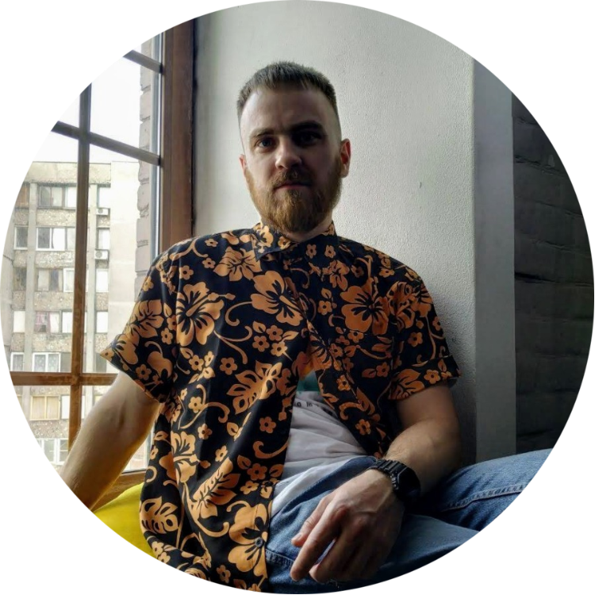

Вербицький Олексій Микоайович
Контактна інформація
- моб.тел: +38 [067] 43-37-52
- e-mail: alverba88@gmail.com
Освіта
- (2007 - 2011 р.р.)
- Національний технічний університет України «Київський політехнічний інститут»
Теплоенергетичний факультет
Спеціальність: «Автоматизовані та комп'ютерно - інтегровані технології» (бакалавр)
Спеціалізація: «Автоматизоване управління технологічними процесами»
- (2011 - 2013 р.р.)
- Національний технічний університет України «Київський політехнічний інститут»
0Теплоенергетичний факультет
Спеціальність: «Автоматизовані та комп'ютерно - інтегровані технології» (магістр)
Спеціалізація: «Автоматизоване управління технологічними процесами»
Додаткова освіта
- (2010 - 2012 р.р.)
- Національний технічний університет України «Київський політехнічний інститут»
Факультет Менеджменту та Маркетингу
Спеціальність: «Економіка підприємства» (бакалавр, вечірнє відділення)
- Вересерь 2012 р.
- Курс теоретичного і практичного навчання «Використання програмної платформи System Platform від компанії від компанії Wonderware». Тренінг WW System Platform Professional.
- Лютий 2015р.; Січень 2016 р.
- Теоретичний і практичний тренінг з виробництва, монтажу, настройки та випробування високовольтного обладнання виробництва Crompton Greaves Power and Industrial Solutions Limited
Досвід робори
- Жовтень 2011р. - Травень 2012 р.
- НТУУ «КПІ», Теплоенергетичний факультет, інженер лабораторії автоматизації
- З Березня 2013р. - по Травень 2015 р.
- Електротехнічна компанія «Система», технічний інженер відділу обладнання ВРП ВН і СН
- З Травня 2015 р. - по Березень 2017 р.
- Електротехнічна компанія «Система», менеджер тендерного відділу
- З березня 2017р.
- Електротехнічна компанія «Система», проджект менеджер відділу обладнання ВРП ВН і СН